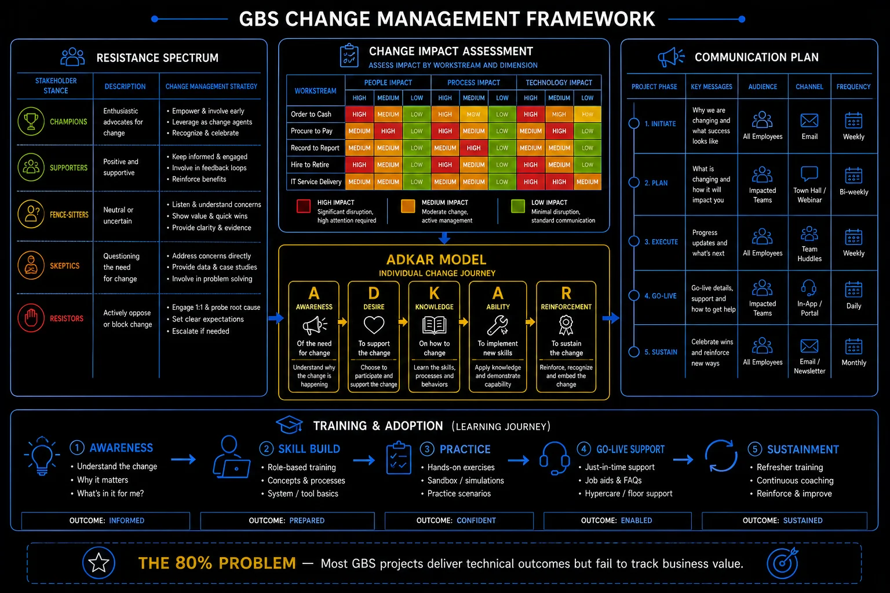

Pillar 8 · Cluster 4
Change management in GBS transformations
Technology implementation is the easy part. Getting people to adopt new processes, tools, and ways of working is where transformation programs succeed or fail.

Change management framework — resistance spectrum, ADKAR, training and adoption
Sound familiar?
Topic 01 · Communication
Change communication strategies
Change communication answers one question per audience: what changes for me? Vision statements do not; specifics do. The model is in THE FIX.
You explained the why.
They asked: what happens to me?
 K
KKlaudia presents the new process: strategy slides, benefits, the vision. Polite silence.
Then one hand: "So what exactly changes at my desk on Monday?"
She has no slide for the only question in the room.
"They did not resist the change. They resisted not knowing their part of it."
She feels caught short — with the answer that actually mattered.
You communicate the organization’s why and skip each person’s what.
Effective change communication is per-audience specificity.
Her next deck has one slide per team: your Monday, before and after. The questions turn from anxious to practical.
Change communication in depth
People do not resist change. They resist being changed without understanding why, how, or what it means for them personally.
Before the message · the change curve
Before you write a single announcement, understand what the announcement does to people. When leadership says something big — the company is moving work into a GBS or shared-services model, and some roles in the current location will move or go — people do not travel from the old world to the new one in a straight line. They drop first. The pattern is well documented as the change curve, adapted from Elisabeth Kübler-Ross’s work on how people process loss, and its low point is the Valley of Despair.
Engagement dips before it recovers — meet people where they are on the curve, and keep the climb out in sight
Performance and engagement fall before they recover. Someone who has just heard “your work is moving offshore” is not ready on day one to absorb the new operating model — they are still working out what it means for their job, their team, and the skills they spent years building. Communication that lands meets people where they actually are on the curve, which is rarely where the project plan assumes. Treat it as a guide that bends: people move at different speeds, skip stages, and slide backward when the news shifts. Your job is to shorten the dip and keep the way out visible.
- Shock & denial — “This won’t really happen.” Give clear, repeated facts and a named timeline.
- Frustration & anger — “Why us?” Listen and let people be heard; arguing them out of it backfires.
- Valley of despair — “I don’t see a place for me.” Practical one-to-ones and honesty about real options rather than blanket reassurance.
- Experiment — “Maybe I can learn this.” Training, a buddy, safe practice, and early wins.
- Decision & commitment — “This is how we work now.” Recognition, and retire the old way so there is no drift back.
- Why — explain the business reason for the change in terms the audience cares about (not the project team's reasons)
- What — describe specifically what will change in their daily work, tools, and processes
- When — provide a realistic timeline with milestones they can track
- How — explain the support available (training, help desk, champions, FAQs)
- What stays the same — reassure by explicitly naming what is not changing; people need anchors during change
Applying the framework
Once people are climbing out of the dip, the five questions above give the message its backbone. Answer all five from the audience’s point of view, and keep answering them — one announcement does not carry a year-long change.
- Why — “The business needs one global standard and a lower cost-to-serve so it can keep investing in growth” — in their language rather than internal synergy targets.
- What — “From March, invoice processing for your region moves to the Manila hub; your role shifts from processing to exception handling and oversight.”
- When — “Knowledge transfer runs January to February, go-live is 1 March, hypercare through April.”
- How — “Two weeks of training, a named buddy in the hub, a daily stand-up during hypercare, and an FAQ updated every week.”
- What stays — “Your reporting line, your pay, and your leave are unchanged, and the team you sit with stays together.”
Resistance spectrum — champions to resistors
Reading resistance
Resistance is usually information — a signal about a risk the person can see before you can. Three sources cover most of it. Fear of loss runs deepest: people fear for their job, their status, and the competence they built over years. Meet it with empathy and straight answers about what happens to roles, because vague comfort makes it worse. Lack of trust shows up when leadership has over-promised before; meet it with transparency about what you know, what you do not, and when you will know more. Change fatigue sets in when this is the fifth initiative of the year; meet it by prioritizing, protecting people’s time, and retiring initiatives that no longer earn their place.
Across any population you will find a few champions, a large movable middle, and a few committed resistors. Spend your energy on the middle and recruit the champions to help carry the message; the loudest resistor is rarely the best use of your time.
ADKAR — awareness, desire, knowledge, ability, reinforcement
Diagnosing the individual · ADKAR
ADKAR (Prosci’s model) is the diagnostic for the individual side of change. It names the five things a person needs, in order, for a change to take and hold — and it tells you where someone is stuck. The most common stall is at Desire: people understand why the change is happening but do not yet want it. That gap is emotional, and it is exactly where the change curve and ADKAR meet.
- Awareness — why it is happening: a town hall and a short leader video on the business reason and what happens to roles.
- Desire — want to take part: the new role is higher-skill, built around oversight and exceptions rather than keying, with a named growth path.
- Knowledge — how to do it: training on the new tools, the new process, and the hand-off points with the hub.
- Ability — can actually do it: hypercare, a buddy, and practice on real cases with support before sign-off.
- Reinforcement — makes it stick: recognize the people who adopt early, track adoption, and retire the old process so there is no fallback.
Change is more than a set of comms and announcements sent to the part of the organization that remains. Those are table stakes. The work that actually moves an organization is to:
- Drive the vision — keep saying where this is going and why it is worth it, long after the kick-off has faded.
- Explain the hand-off points and the new way of working — who owns what now, where work passes between the retained team and the hub, and how that is meant to feel day to day.
- Establish ambassadors in each department — people on the ground who help drive the change and surface shortfalls early, so problems get fixed in days instead of quarters.
- Share success stories and lessons learned with the wider organization — proof that the new way works, and honesty about what did not, so the next wave goes better.
Tie these back to the stages: the vision feeds Awareness and Desire, the hand-offs and training feed Knowledge and Ability, the stories and recognition feed Reinforcement. The concepts earn their keep when you combine them with the real tasks and the stage each person is actually in.
For your current change: write the "your Monday" paragraph for one affected role. Test it on them.
Good messages still meet resistance. That is not a malfunction.
Topic 02 · Resistance Management
Managing cultural resistance during change
Resistance to change is information, not sabotage. It maps to fear, loss, or history — each with a different response. The model is in THE FIX.
One hub went silent.
Silence is also resistance.
Priya’s new process: one hub pushes back loudly. Another says yes to everything — and changes nothing.
She stops fighting symptoms and asks each team what the change threatens.
Hub one fears skill obsolescence. Hub two lost trust after the last "improvement" doubled their work.
"The resistance was a message. I finally read it."
She feels wiser about both hubs — and about the last project’s ghost.
You treat resistance as an obstacle to push through instead of a diagnostic to read.
Resistance decodes into three sources — each needs a different answer.
Hub one gets a skills plan; hub two gets one small kept promise. Success stories from both start doing the convincing for her.
Cultural resistance in depth
Resistance is information, not an obstacle. When people resist, they are telling you what they are afraid of, what they do not understand, or what you have not addressed.
- Fear of job loss — address directly with honesty; if roles will change, say so; if roles are safe, confirm explicitly
- Competence anxiety — "I do not know how to use the new system" requires training and patient support, not more communication
- Loss of status — people who were experts in the old system lose their advantage; acknowledge this and create roles for their expertise in the transition
- Rational objection — some resistance is valid feedback that the change plan has gaps; listen for it
- Cultural inertia — "we have always done it this way" requires visible leadership endorsement and early wins that demonstrate the value of the new approach
- The loudest resistors are rarely the most dangerous. The quiet ones who nod in meetings but revert to old processes behind closed doors are the real risk.
- Change management is not a one-time communication. It is ongoing reinforcement until the new way of working becomes the default — typically 6-12 months after go-live.
Training journey — awareness to sustainment
Ask one resistant colleague: "What would this change cost you?" Read the answer as data.
Change lands on people. Cluster 5: when the person it lands on is you.
The projects that land well in GBS almost always share two things: visible leadership backing and strong change management.
- → When the sponsor actively champions the project, decisions get made fast, blockers get cleared, and the team has real authority to move.
- → Pair that with solid change management — bringing people along before, during, and after go-live — and you dramatically reduce post-go-live disruption, even in complex migrations.
- → These two reinforce each other: leadership backing gives change management its credibility, and change management turns leadership's vision into reality on the floor.
- → Get both right early, and you set the project up for a smooth landing.
Reference
Glossary
Full glossary at the GBS Insider Club Field Guide.
- Prosci — Best Practices in Change Management, 2024
- Kotter, John — Leading Change, Harvard Business Review Press, 1996
- McKinsey — The irrational side of change management, 2009
Knowing the frameworks is the entry ticket. Applying them — visibly, at your actual job — is what gets you promoted.
The GBS Insider Club Career Paths turn this theory into a guided 90-day program for your role: self-assessment, practical exercises, templates, and Julian's unfiltered practitioner playbook.
Explore the Career Paths → Back to Projects and Transformation